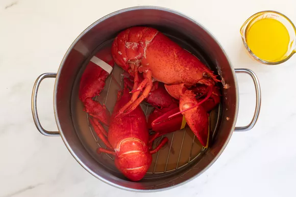
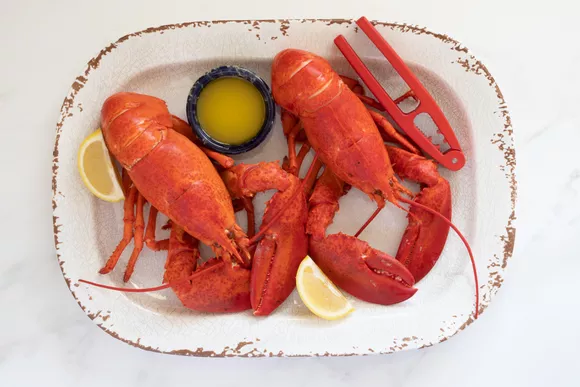

Steamed Lobster Recipe
:max_bytes(150000):strip_icc():format(webp)/steamed-lobster-5097205-hero-06ab15ae53234b0ea162b60d54e57856.jpg)
Whether on the stovetop or over an open fire outdoors, gentle steaming is the key to the most tender and
flavorful lobster meat. And because you don't have to bring a huge pot of water to a boil, steamed lobster
is much faster than boiled lobster.
You will need a large pot such as a stockpot or canning kettle. A trivet
or steaming basket helps keep the lobsters out of the water but is not necessary.
Lobsters are available year-round, though prices and quality may depend on the season. Most lobsters
are
harvested between late June and December. They are caught in smaller amounts during January and
early
spring, so they are likely to be scarcer and more expensive.
Ingredients:
- 2 live lobsters about 1 1/4 to 1 1/2 pounds each
- 1 tablespoon salt
- 1/2 cup melted salted butter
- 1 medium lemon (cut into wedges);
Reversed steps to Make it:
- Gather the ingredients.
- Place a trivet or steaming basket in a large stockpot and add 1 1/2 to 2 inches of water and the salt.
- Bring the water to a full boil. Grasp a lobster around the abdomen, behind the claws, and lower it into
the pot, head-first. Put the second lobster in the pot.
-
Immediately cover the pot and let the
lobsters
steam for about 10 minutes for 1-pound lobsters, 12 minutes for 1 1/4 pound lobsters, or 14
minutes
for
1 1/2-pound lobsters.

- Increase another 2 minutes for every 1/4-pound over 1 1/2 pounds.
- Remove the lobsters with tongs and let them stand for 5 minutes before cracking. Serve the lobsters with
melted butter and lemon wedges, if desired.
